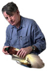
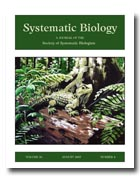
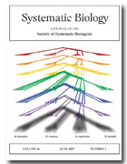

Society of Systematic Biologists
Home of Systematic Biology
Popular contentSyndicateCategories
User loginNavigationWho's onlineThere are currently 0 users and 2 guests online.
|
Ph.D. Program in Comparative Biology at AMNH
 JOB OPPORTUNITY: Assistant Professor/Curator of Genetic ResourcesThe University of Washington is seeking applications for a tenure-track faculty position to serve as academic curator of genetic resources at the Burke Museum (http://www.burkemuseum.org) and as a faculty member in the Biology Department. Appointment is anticipated at the Assistant Professor rank. In exceptional circumstances, appointment at the Associate or Full Professor level may be considered for candidates who have demonstrated a commitment to mentoring underrepresented students in the sciences. Ph.D. required by date of appointment. University of Washington faculty engage in teaching, research and service. Assistant Professor/Curator, Genetic Resources, University of Washington
August data and appendices onlineData files and appendices are now online. The cover of this issue is by New Zealand artist Daniel Reeve, which seems appropriate given the topic of the first paper in the issue, the successful Evolution 2007 conference held in Christchurch, and Daniel Reeve's involvement in the Lord of the Rings trilogy (which inspired the title of the DOOM phylogenetics meetings, starting with DOOM 01). Alexei Drummond interview
Blind.Scientist has an interview with Alexi Drummond, author of Geneious and coauthor of BEAST. Best quote: Construction and annotation of large phylogenetic treesMike Sanderson's review "Construction and annotation of large phylogenetic trees" has just been published in Australian Systematic Botany 20(4) 287√¢‚?¨"301 doi:10.1071/SB07006 Broad availability of molecular sequence data allows construction of phylogenetic trees with 1000s or even 10 000s of taxa. This paper reviews methodological, technological and empirical issues raised in phylogenetic inference at this scale. Numerous algorithmic and computational challenges have been identified surrounding the core problem of reconstructing large trees accurately from sequence data, but many other obstacles, both upstream and downstream of this step, are less well understood. Before phylogenetic analysis, data must be generated de novo or extracted from existing databases, compiled into blocks of homologous data with controlled properties, aligned, examined for the presence of gene duplications or other kinds of complicating factors, and finally, combined with other evidence via supermatrix or supertree approaches. After phylogenetic analysis, confidence assessments are usually reported, along with other kinds of annotations, such as clade names, or annotations requiring additional inference procedures, such as trait evolution or divergence time estimates. Prospects for partial automation of large-tree construction are also discussed, as well as risks associated with √¢‚?¨À?outsourcing√¢‚?¨‚?¢ phylogenetic inference beyond the systematics community. PhyloCode: Version 4b now online
The PhyloCode is a formal set of rules governing phylogenetic nomenclature. It is designed to name the parts of the tree of life by explicit reference to phylogeny. The PhyloCode will go into operation in a few years, but the exact date has not yet been determined. It is designed so that it may be used concurrently with the existing codes based on rank-based nomenclature (ICBN, ICZN, etc.). We anticipate that many people whose research concerns phylogeny will find phylogenetic nomenclature advantageous. There is a forum for discussing the Phylocode at the International Society for Phylogenetic Nomenclature. The 3rd International Conservation Genetics SymposiumThe American Museum√¢‚?¨‚?¢s Sackler Institute for Comparative Genomics, the Yale Institute for Biospheric Studies, and the American Genetic Association invite you to attend ConGen3 at the American Museum of Natural History in New York City, 27-29 September 2007. Phyloinformatics Workshop in Edinburgh October 22-24 2007
June 2007 data onlineThe June 2007 issue has a lot of supplementary data, ranging from NEXUS and BEAST data, files, program scripts, software output, and survey results. These files are now online. |
Latest issue
EVOLDIRphylobabble.orgiPhyloPhyloseminarSystematics AssociationNESCentThe Genealogical World of Phylogenetic NetworksCiteULike PhylogenyEvolutionary Bioinformatics
CladisticsBMC Evolutionary Biology
Molecular Biology and Evolution |
 Follow us on Twitter
Follow us on Twitter Find us on Facebook
Find us on Facebook